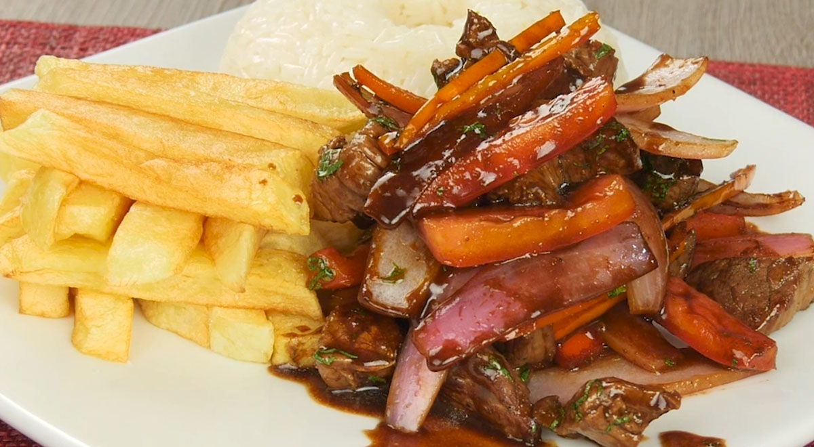

Lomo Saltado

Description
Lomo saltado is a beloved Peruvian stir-fry that masterfully blends Chinese cooking techniques with traditional Peruvian ingredients, reflecting the country's rich culinary fusion. The dish features tender strips of beef sautéed with onions, tomatoes, and ají amarillo (Peruvian yellow pepper), creating a colorful and flavorful medley. Soy sauce and vinegar add depth to the stir-fry, while cilantro provides a fresh, aromatic finish. Lomo saltado is typically served with both crispy French fries and steamed white rice, combining the best of two worlds in one satisfying meal.
What makes lomo saltado truly unique is its mix of textures and flavors: the juicy, marinated beef paired with the slight crunch of the vegetables, all coated in a savory sauce that’s both tangy and slightly spicy. The French fries, traditionally mixed into the stir-fry or served alongside, soak up the rich juices, adding to the dish’s heartiness. Lomo saltado is a vibrant and comforting dish that perfectly encapsulates the fusion of Peruvian and Chinese cuisine, making it a staple in Peruvian households and restaurants alike.
Ingredients
For the beef marinade:
- 1 lb beef sirloin (cut into strips)
- 2 tablespoons soy sauce
- 1 tablespoon red wine vinegar
- 1 tablespoon olive oil
- 1 teaspoon ground cumin
- Salt and pepper to taste
For the stir-fry:
- 2 tablespoons vegetable oil
- 1 large red onion (sliced into thick wedges)
- 2 tomatoes (sliced into wedges)
- 1-2 ají amarillo peppers (thinly sliced, or substitute with bell pepper or jalapeño)
- 3 cloves garlic (minced)
- 2 tablespoons soy sauce
- 1 tablespoon red wine vinegar
- ¼ cup beef broth or water (optional, for extra sauce)
- Fresh cilantro (chopped, for garnish)
For serving:
- French fries (homemade or store-bought)
- Steamed white rice
Steps
- In a bowl, combine soy sauce, vinegar, olive oil, cumin, salt, and pepper. Add beef strips, mix well, and marinate for at least 30 minutes.
- Prepare French fries by frying or baking them until crispy. Set aside.
- Heat vegetable oil in a large pan over high heat. Sear the marinated beef strips for 2-3 minutes until browned but not fully cooked through. Remove from the pan and set aside.
- In the same pan, add a bit more oil if needed. Sauté onions and ají amarillo (or bell pepper) for 2-3 minutes until slightly softened. Add garlic and cook for another minute.
- Add tomatoes, soy sauce, vinegar, and beef broth (if using) to the pan. Return the beef to the pan and stir-fry for 2-3 minutes until everything is heated through and well combined.
- Plate the lomo saltado with French fries mixed in or on the side, and serve with steamed white rice. Garnish with fresh cilantro.